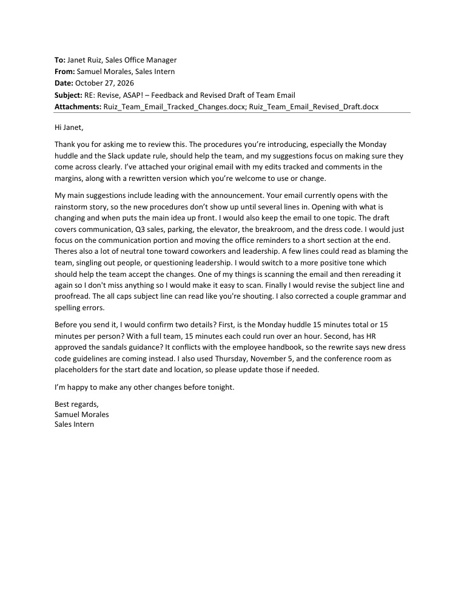
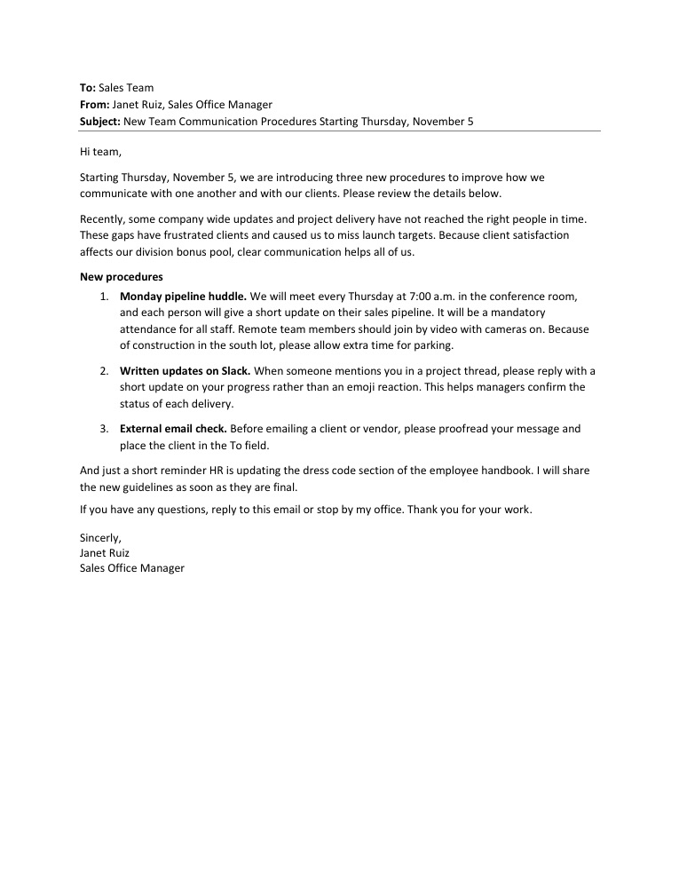
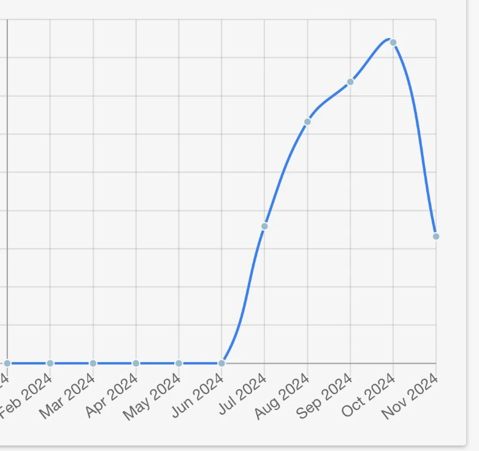
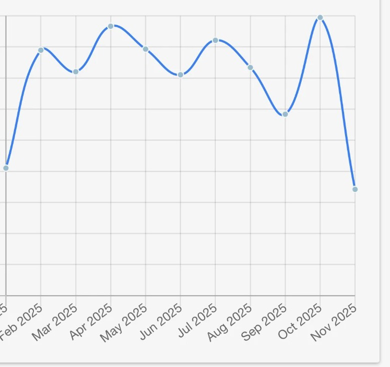
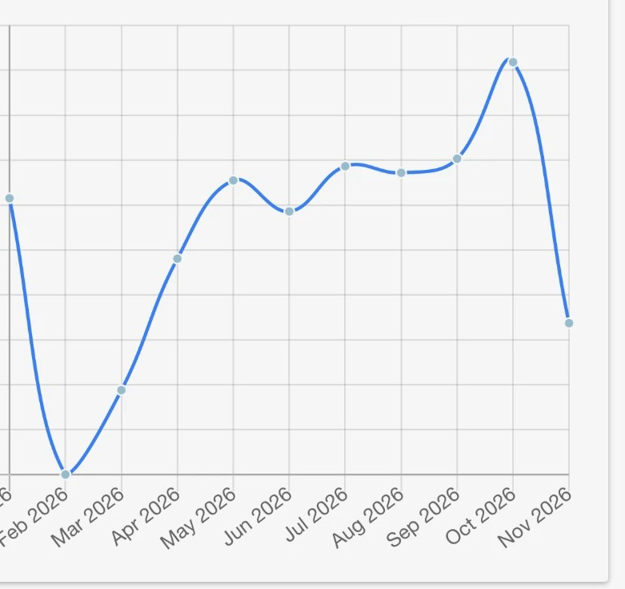

Projects
Selected work
Three pieces from BCOM 3300 this semester, each with a reflection on what I learned about communicating clearly.
Oral · Team presentation
Building Your Network
An interactive workshop with Emily Olivera, Maile Metalwala and Rushil Patel. Instead of lecturing, we had the audience design their own "ideal connection" on a worksheet as we went.
View the full slide deck (PDF) →
What we did
We walked the class through four parts of a strong professional network: genuine connection, your inner circle, "energy vampires" to avoid, and how you want to receive criticism. After each part, the audience filled in that section of a worksheet. [Add the part you presented.]
Feedback we received
[What did classmates or your instructor say? For example: pacing, eye contact, how engaging the worksheet was.]
What I learned
Keeping an audience involved beats keeping them quiet. Giving people something to do after each section held their attention and made the ideas personal. [Add one thing you'd do differently next time.]
Written · Email activity
Revising a team email
As a sales intern, I was asked to review a manager's urgent announcement to the team. I sent back a reply with my suggestions, plus a rewritten version she could use right away.


What I did
The original email buried three new procedures under a long story, mixed in unrelated topics like parking and the dress code, and had an all-caps subject line. I moved the announcement to the top, kept the email to one topic, softened the tone so it wouldn't read as blaming anyone, made it easy to scan, and flagged two details to confirm before sending.
Feedback I received
[What did classmates or your instructor say about your reply or revision?]
What I learned
Good business writing puts the reader first: lead with what's changing and when, cut everything that isn't the main point, and frame feedback to a manager respectfully. Asking clarifying questions before something goes out can save a team from confusion later.
Data · Tracking activity
Tracking my work hours & pay
I log every shift in an earnings app (pay amounts hidden for privacy). Comparing the same stretch (January 1 to November 16) across three years turned a pile of shifts into a clear story about my work.



What I tracked
Hours, take-home pay and pay per hour for every shift, viewed by month and by year. Lining up the same date range for each year made the comparison fair.
What the data showed
My hourly take-home rose about 24% from 2024 to 2025, and I more than doubled my hours. The dip in early 2026 matches when I changed jobs, and the climb afterward shows how quickly I got back up to speed. [Confirm or correct this story.]
What I learned
Numbers alone don't communicate much. Picking a fair comparison, pulling out two or three key figures, and explaining what caused the ups and downs is what turns data into something a reader understands. [Add feedback you received.]